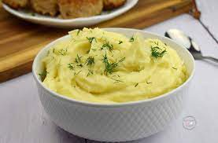

Mashed potatoes recipe
>
Description
Delicious mashed potatoes, great as a side dish for any type of main course
The whole process should take no more than 20 minutes
Ingredients
- Potatoes - 200 g
- Butter - 20 g
- Milk - 50 ml
- Salt - 1 tsp
- Parsley - 1 tsp
Steps
- Peel the potatoes and boil them for 15 minutes in salted water. Remove the water and leave the potatoes in the pot to rest for approx. 5 minutes.
- Add the butter and wait for it to melt. Then pour milk into the pot.
- Smash the potatoes with a dedicated potato masher for approx. 2-3 minutes. If you don't have one, you can use simple kitchen fork.
- Serve immediately after preparing, while still very hot. If you want, you can finish with some seasoning - a sprinkle of salt and some parsley for additional taste.